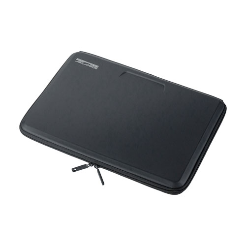
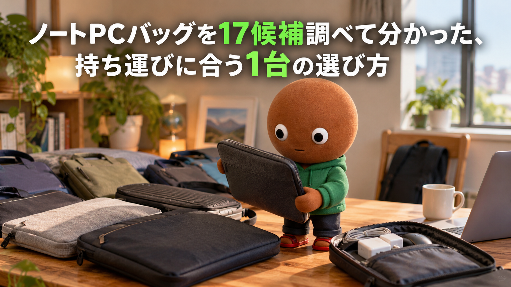
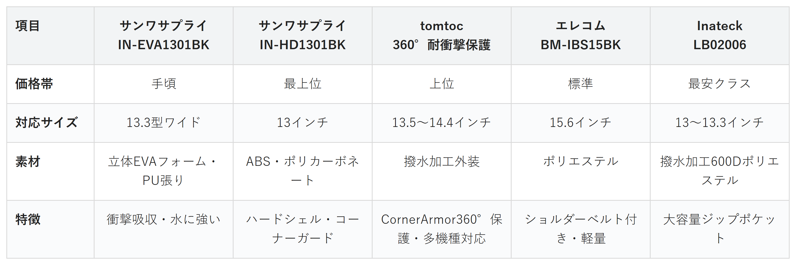

Amazonで見るノートPCをそのままカバンに入れて、画面や角が傷つかないか気になる人へ
そのPC、
ちゃんと守れていますか？
ノートPCバッグ（インナーケース）17候補を調査。安さ・耐衝撃・撥水と多機種対応・軽さ・収納力から、選び方の違う5商品を比較しました。
自分に合うノートPCバッグを探す
この記事はAmazonアソシエイト・プログラムの参加者として、紹介料を得る場合があります（PR）。仕様は調査時点の情報です。
17候補から、選び方の違う5商品に絞りました。まずは気になる1台へ。向いている人・向いていない人と、低評価レビューもまとめています。
17候補を調査
5商品に厳選
低評価レビューも確認済み
結論から先に言うと：
あなたの持ち運び方に合う、1台を。
横にスワイプして、5商品を見比べる
選び方の基準は2つ
調べてわかったのは、基準はシンプルでした。
1つ目は「持ち運び方」。満員電車での圧迫や、雨・水濡れが気になるなら、耐衝撃性や撥水性を優先したい人が多いはずです。
2つ目は「収納したい物」。PC本体だけでいいのか、電源アダプタやマウスもまとめて持ち歩きたいのかで、向いているケースが変わります。
価格帯にはかなり幅がありました。
比較表

価格帯・対応サイズ・素材・特徴の比較（価格帯は最安クラス〜最上位の5段階）
サンワサプライ IN-EVA1301BK
- 手頃
- 対応サイズ13.3型ワイド
- 立体EVAフォーム・PU張り
- 衝撃吸収・水に強い
サンワサプライ IN-HD1301BK
- 最上位
- 対応サイズ13インチ
- ABS・ポリカーボネート（ハードシェル）
- コーナーガード・開けたまま使えるストッパー構造
tomtoc 360°耐衝撃保護
- 上位
- 対応サイズ13.5〜14.4インチ
- 撥水加工外装
- CornerArmorによる360°保護構造・多機種対応
エレコム BM-IBS15BK
- 標準
- 対応サイズ15.6インチ
- ポリエステル
- ショルダーベルト付き・約300g前後と軽量
Inateck LB02006
- 最安クラス
- 対応サイズ13〜13.3インチ
- 撥水加工600Dポリエステル
- 大容量ジップポケット・伸縮ハンドル
向いてる人
- とにかく初期費用を抑えたい人
- 13.3インチのPCを持っている人
向いてない人
- 16インチ以上のPCを持っている人
選ぶ決め手とにかく安さを重視するなら、この1台です。
低評価レビューも見ました
今回調べた範囲では、目立った低評価の指摘は見当たりませんでした。
参考：レビューブログを基にした集約
IN-EVA1301BKは、
まず1台、インナーケースを
試したい人に最も向く1台です。
立体EVAフォームで衝撃を
吸収し、表面はPU張りで
水にも強い構造になっています。
13.3型ワイドまでの
ノートPCに対応しています。
向いてる人
- 外出先でPCを頻繁に出し入れする人
- バッグ内でPCを守りたい人
向いてない人
- とにかく薄く軽くしたい人
選ぶ決め手耐衝撃性を重視するなら、この1台です。
低評価レビューも見ました
今回調べた範囲では、目立った低評価の指摘は見当たりませんでした。
参考：レビューブログを基にした集約
IN-HD1301BKは、
持ち運び中の衝撃から
PCを守りたい人に最も向く1台です。
ABS・ポリカーボネート製の
ハードシェルに、底面の
コーナーガードを備えています。
フタを開けたまま、PCを
ケースから取り出さずに
使えるストッパー構造もあります。
向いてる人
- 複数メーカーのPCを使い分けている人
- 雨の日の持ち運びが心配な人
向いてない人
- MacBook専用を探してる人
選ぶ決め手撥水と多機種対応を重視するなら、この1台です。
低評価レビューも見ました
今回調べた範囲では、目立った低評価の指摘は見当たりませんでした。むしろ保護性能への好意的な評価が中心でした。
参考：レビューブログを基にした集約
tomtocのこのケースは、
国内メーカーのPCも含めて
幅広く対応したい人に最も向く1台です。
代表的な対応機種は
Surfaceシリーズと
HP・Dell・Asusです。
外装には撥水加工が施され、
特許取得のCornerArmorという
ゴムガードで360°保護しています。
向いてる人
- 15.6インチのPCを持ち歩く人
- 少しでも荷物を軽くしたい人
向いてない人
- ハードシェルの保護力を求める人
選ぶ決め手軽さを重視するなら、この1台です。
低評価レビューも見ました
今回調べた範囲では、目立った低評価の指摘は見当たりませんでした。
参考：レビューブログを基にした集約
BM-IBS15BKは、
15.6インチのPCを毎日
持ち歩きたい人に最も向く1台です。
ショルダーベルトとハンドルの
両方が付いており、持ち方を
状況に合わせて選べます。
外寸は約390×30×300mm、
重さは約300g前後と、
このサイズ帯では軽い部類です。
向いてる人
- 電源アダプタやマウスもまとめて持ち歩きたい人
- スリーブとバッグを使い分けたい人
向いてない人
- とにかく薄さを優先したい人
選ぶ決め手収納力を重視するなら、この1台です。
低評価レビューも見ました
他サイズのモデルでは、Bluetoothマウスのドングルなど出っ張りがあるとジッパーが閉じにくいという報告がありました。ぴったりしたサイズ感を裏付ける内容です。
Inateck LB02006は、
PC以外の周辺機器もまとめて
持ち歩きたい人に最も向く1台です。
前面に大容量のジップポケットがあり、
電源アダプタやケーブル、
マウスなどを一緒に収納できます。
伸縮するハンドルが付いており、
収納すればスリーブ、伸ばせば
ハンドル付きバッグに変形します。
17候補をどう絞った？ 調査の経緯を見る
ノートPCをそのままカバンに入れると、画面や角が傷つかないか気になりませんか。満員電車で圧迫されたり、雨で濡れたりするのも地味に不安な要素です。
なので今回、私がノートPCバッグ（インナーケース）のスペックを調べ比較しました。各商品ごとに、向いてる人・向いてない人も調べているので、自分に合ったノートPCバッグを探してみてください。
17候補から5つに絞り込みました
ノートPCバッグは、価格.com・ヨドバシ・マイベストなど複数のサイトに機種が並ぶジャンルです。今回は主要候補17件を調べ、価格帯・機能・出典の強さが重複しないように5商品まで絞りました。
バッファロー3機種・サンワサプライ2機種・エレコム2機種・tomtoc3機種・Incase1機種・Voova1機種・ARVOK1機種・ハイタイド1機種・シフレ1機種・Case Logic1機種・Inateck2機種という17候補です。
バッファローのBSINH02BKは、公式スペックも確認できましたが、Amazon上で該当商品が見当たりませんでした。アフィリンクを安心して貼れる商品として採用できず見送りました。
サンワサプライのIN-HD1501BK（16インチワイド対応）も、同じ理由でAmazon ASINを特定しきれず見送りました。同シリーズで確認できた13インチのIN-HD1301BKを代わりに採用しています。
Incaseの ICON Sleeveは質は高いものの、日本円建ての正規価格が確認できず見送りました。
Voova・ARVOKは価格と軽さに魅力がありました。ただサクラチェッカーの解説で、「PCバッグ・ケース・スリーブ」カテゴリ自体が要注意製品の比率が高いと指摘されています。個別商品での明確な判定までは確認できなかったため、信頼性の面で見送りました。
低評価の商品も見ました
上の17候補とは別に、サクラチェッカーが「要注意」と判定した商品を調べました。個別レビュー本文の真偽までは検証できないため、機械的に検出された事実だけを正直に書きます。
NIDOOのラップトップスリーブは、レビュー件数23件とカテゴリ平均3,741件を大きく下回っていました。本社所在国は推定中国、公式サイトも見当たらず、価格は通常製品の平均より大幅に安く設定されていました。
NEWHEYの耐衝撃ケースも、本社所在国は推定中国で、「要注意メーカー」に分類されていました。レビュー件数は193件でしたが、価格は通常製品の平均より6割近く安く設定されていました。
調べてみて驚いたこと
17候補を調べる中で対応サイズの表記が想像以上にばらつくと実感しました。同じ「13インチ」でも、外寸・内寸はメーカーによって数センチ単位で差がありました。
またAmazon.co.jpでASINをうまく特定できない商品が複数あることも分かりました。公式スペックが立派でも、アフィリンクを安全に貼れるかどうかは別問題だと今回あらためて感じました。
迷ったらこれ
ここまで読んでもまだ迷ったら、価格の手頃さと衝撃吸収を両立したIN-EVA1301BKが、外しにくい1台としておすすめです。
Amazonで見る→よくある質問
Q. ノートPCバッグとインナーケースは何が違いますか。
A. 今回はほぼ同じ意味で使っています。単体で持てる薄型のものを「インナーケース」、ショルダーベルトなど持ち手が充実したものを「バッグ」と呼ぶ傾向がありますが、明確な業界基準があるわけではありません。
Q. 13.3インチと13インチのケースは兼用できますか。
A. メーカーによって内寸に差があるため、兼用できるとは限りません。お使いのPCの実寸（幅・奥行・厚さ）を確認してから選ぶと安心です。
Q. 撥水と防水は同じですか。
A. 違います。今回比較した商品はいずれも「撥水」表記で、完全防水ではありません。小雨程度は弾けますが、水没や長時間の雨ざらしには対応していません。
Q. ハードシェルとソフトケースはどちらが安心ですか。
A. 外部からの圧迫や落下の衝撃を最も防ぎたいなら、今回のIN-HD1301BKのようなハードシェルが安心です。軽さを優先するなら、ソフトなEVAフォームタイプも選択肢になります。
Q. 電源アダプタも一緒に入れたいのですが、対応していますか。
A. 今回の5商品の中では、Inateck LB02006の前面ジップポケットが電源アダプタ・ケーブル・マウスの収納を想定した作りになっています。
こんな記事も書いてます
ミートボーの調査部屋で他の記事も見る（全本）


出典
- 価格.com ノートパソコンケース検索結果：search.kakaku.com
- ヨドバシ.com パソコンインナーケース 人気ランキング：yodobashi.com
- マイベスト ノートパソコン用インナーケースのおすすめ人気ランキング：my-best.com
- バッファロー BSINHシリーズ 製品ページ：buffalo.jp
- サンワサプライ IN-EVA1301BK 製品ページ：sanwa.co.jp
- 価格.com IN-EVA1301BK：search.kakaku.com
- サンワサプライ IN-HD1501BK 製品ページ（同シリーズ仕様参考）：sanwa.co.jp
- サンワサプライ IN-HD1301BK バリエーション一覧：sanwa.co.jp
- Amazon.co.jp サンワサプライ IN-EVA1301BK：amazon.co.jp
- Amazon.co.jp サンワサプライ IN-HD1301BK：amazon.co.jp
- Amazon.co.jp tomtoc 360°耐衝撃保護 13.5-14.4インチ：amazon.co.jp
- tomtoc Defender-A13 14インチ製品ページ（同ブランド構造参考）：jp.tomtoc.com
- エレコム BM-IBS15BK 製品ページ関連情報：elecom.co.jp
- Amazon.co.jp エレコム BM-IBS15BK：amazon.co.jp
- Inateck LB02006 製品ページ：inateck.co.jp
- Amazon.co.jp Inateck LB02006：amazon.co.jp
- サクラチェッカー 検索結果（NIDOO ラップトップスリーブ）：sakura-checker.jp
- サクラチェッカー 検索結果（NEWHEY 耐衝撃ケース）：sakura-checker.jp